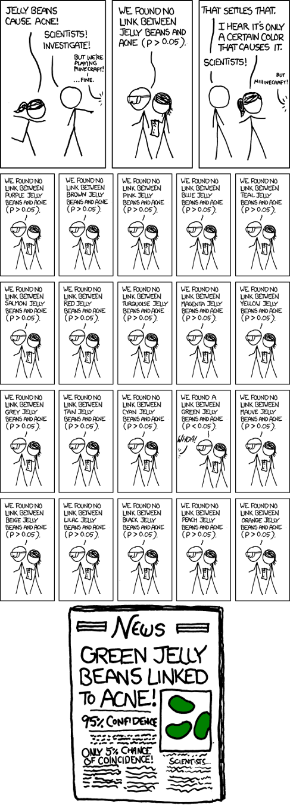

In this assignment, you will implement five control procedures for multiple testing introduced in the lecture. Then, you will apply these procedures to a real-world dataset and reflect on their impacts on the number of rejections.
You can click here to get the stencil code for Homework 4. Reference this guide for more information about Github and Github Classroom.
The data is located in the data folder. To ensure compatibility with the autograder, you should not
modify the stencil unless instructed otherwise. For this assignment, please write your solutions in
the respective .py files. Failing to do so may hinder with the autograder and result in
a low grade.
Write Code: Use whatever editer or IDE you like.
Execute Code: First,
ssh into the department machine by running
ssh [cs login]@ssh.cs.brown.edu and typing your password when
prompted. Then, navigate to
the assignment directory and activate the
course virtual environment by running
source /course/cs1951a/venv/bin/activate. You can now run your code for the
assignment. To deactivate this virtual environment,
simply type deactivate.
Python requirements: Python 3.7.x. Our Gradescope Autograder uses Python 3.7.9. Using some other version of Python might lead to issues installing the dependencies for the assignment.
Virtual environment:
create_venv.sh
script in Homework 1, activate your virtual environment using cs1951a_venv or
source ~/cs1951a_venv/bin/activate anywhere from your terminal. If you have
installed your virtual environment elsewhere, activate your environment with
source PATH_TO_YOUR_ENVIRONMENT/bin/activate.
Write Code: Use whatever editor or IDE you like.
Execute Code: Activate the virtual environment and run your program in the command line.
You are a research scientist, and you are developing a new drug to combat a rare disease. It's a recent addition to the pipeline, so you're testing if it alleviates all 10 known symptoms of the disease. All of these tests will be conducted simultaneously.
With your new statistical expertise, you get to work, selecting a significance level α of 0.05 and running your experiment on a group of volunteers as well as a control group given sugar pills. You set up 10 hypotheses:
You analyze the experimental group and find good news! There is statistically significant evidence that the drug alleviates both nausea and muscle spasms. However, to your surprise, the sugar pills appear to treat an equal number of symptoms - treating the headaches and coughs provoked by the disease.
What went wrong? Remember what the significance level means - it is the probability of rejecting the null hypothesis given that it is true. With a single hypothesis, the risk of a false discovery under the null hypothesis was exactly α : 5%. Now, with 10 simultaneous tests, assuming all 10 null hypotheses in the control group, the odds of making no false discoveries is 0.95^10 = 60% - that's a 40% chance of having at least one false discovery! No wonder the sugar pills appeared to be so helpful.
The cure to our problem is not sugar pills - it is a remedy of various statistical techniques for handling multiple comparisons.
First, a look at our 4 possible outcomes and a few definitions:
| Null is true | Null is false | Total | |
|---|---|---|---|
| Reject | Type I error False Positive V |
Correct True Positive S |
Discoveries/Rejections R=V+S |
| Fail to reject | Correct True Negative U |
Type II error Afalse Negative T |
m-R |
Each hypothesis can be true or false, and it can be "accepted" (no evidence to reject) or rejected. U, V, T, S, and R are the random variables of our experiment, with R being the only observable random variable. Our goal is to limit V - the number of false discoveries.
The FWER is the older of the two methods, and controlling it is more powerful as you're controlling the probability of having any false discoveries. It is best used with a smaller number of hypotheses where a single false discovery is undesirable. However, it is not always the optimal choice, and changing technology and demands required the development of an alternative. For example, when dealing with genomes, one might have millions of hypotheses where a small number of false discoveries is acceptable. This is why methods of controlling the FDR were developed starting in the 90's.
Now that you’ve been introduced to the FWER and the FDR, you’ll try your hand at controlling them! Each has a long history of research; you’ll be coding three methods of controlling FWER and two methods of controlling FDR.
The only python library allowed in your implementation of this section is numpy. You can, however, use statsmodel to test your code in
fwer_test.py and fdr_test.py.
First, you will be writing code for 3 procedures for controlling FWER: Bonferroni, Holm, and Hochberg.
Please fill out each of the 3 functions in fwer_control.py; they each take in a list of p-values and return a list of booleans that
identifies which of the hypotheses should be rejected under the procedure. Check out the docstrings for more information.
We have prepared fwer_test.py with some basic tests for you to check your functions.
Run python fwer_test.py to see your results.
Note that passing all the tests does not guarantee full
marks for this section. Our autograder will test your implementation using randomly generated arrays.
You may want to come up with more tests to ensure accuracy.
After testing your FWER Control code, you will fill out the Benjamini-Hochberg and Benjamini-Yekutieli functions in fdr_control.py.
The input and return for each will be the same as in the three FWER control functions. The implementations for the two should be similar
and the only difference is that Yekutieli uses an adjusted q-value. More specific instructions on how to complete the functions are given in the
docstring in fdr_control.py.
To check if your functions are correct, run fdr_test.py and try to add your own tests to make sure your implementation is correct.
After passing all the FDR and FWER tests, you will apply these control procedures to a real-world dataset in main.py! For each of the
following functions, make sure you understand the docstring in the stencil before you start coding. You should not use any libraries and functions
that have not already been imported in main.py.
The dataset is under the data directory with file name wdbc.csv. It includes 569 breast cancer data points; each cancer has 30
features as well as the cancer type diagnosis (i.e. malignant or benign) and id. Please refer to wdbc_description.txt
in the data folder for more details on the dataset.
Using pandas, you will load and preprocess the data in the preprocess function of main.py. In this function, you should remove
the “id” column and encode the diagnosis types. Refer to the stencil for more specific instructions on this step.
The next step is to define the null hypotheses. For the purposes of this assignment, you will be conducting multiple correlation tests. Below are the two methods you need to implement for this step.
encode_feature_with_thresholdIn this function, you need to calculate the thresholds for a feature column that will be used to formulate the null hypotheses corresponding to this feature. There are 10 thresholds for each feature. For setting the thresholds, you should evenly divide each feature’s values into (num_thresh+1) sections. The function should return a numpy binary array of shape (num_thresh, num_cancer). See the function’s docstring for a concrete example on how to encode the input feature.
generate_pvals
Then, you will calculate the p values for the null hypotheses. This method takes in the preprocessed data and calls encode_feature_with_threshold
to encode each of the 30 features.
With 10 thresholds, each feature has 10 null hypotheses. For feature i, the null hypothesis j would be:
You should use scipy.stats.pearsonr
for calculating the p-values.
At the end, generate_pvals should return a 1D numpy array of length num_tests
(which is 30*10 = 300).
Let’s implement naive_multiple_testing so that we can compare its results with the ones returned by the procedures with FDR or FWER controls.
This function’s structure is similar to the control procedures you have implemented already. But this time we are not adding any controls.
Then, follow the instructions in main and fill in this method.
After this, you should be able to see the changes in the number of rejections when you apply 1) no control at all, 2) FWER control, and 3) FDR control.
Based on your results, which type of control is more stringent, FDR or FWER? Why does that happen? What accounts for the differences in the results from the procedures of the same type of control?
In written_questions.md, save your results (i.e., the number of rejections for each procedure) and answer the previous questions. We are looking for a high-level explanation of the differences among the procedures and between the two control types. Your answer should base on the results from your implementation. If your results appear to deviate from the theories we learned in class, explain why you think that's the case.
What kind of control and which procedure would you recommend to be used? Justify your answer.
What kind of control and which procedure would you recommend to be used? Justify your answer.
Beyond multiple testing, data scientists make many decisions throughout the analysis process that can lead to a variety of results. Read the Intro and Part 1 of this article and experiment with the "Hack Your Way To Scientific Glory" interactive. Manipulate the variables to get "Publishable" and “Unpublishable” results for each political party.
After finishing the assignment, run python zip_assignment.py in the command line from your assignment directory, and fix any issues brought up by the script.
After the script has been run successfully, you should find the file
stats2-submission-1951A.zip in your assignment directory. Please submit this zip file on
Gradescope under the respective assignment.
Made by CS1951A Staff in Spring 2021.